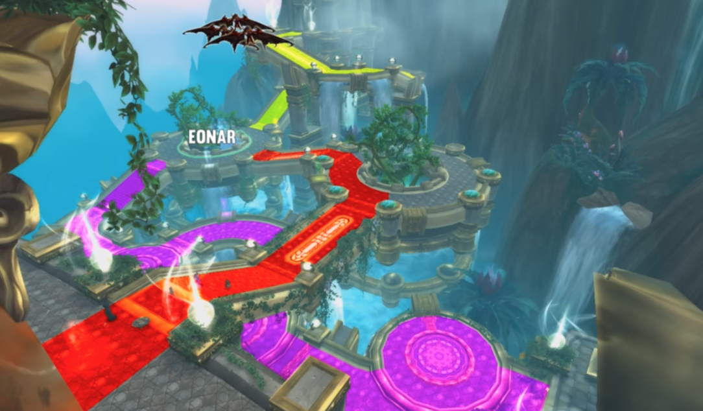

Eonar
Resumo
Nesse Boss nós não lutaremos contra Eonar, ao contrario, iremos defendê-la, matando adds antes que chegam até ela.
Essa luta contem 3 plataformas com rotas que levam a Eonar, Uma superior, uma no meio e uma inferior.

Paraxis é uma nave que sobrevoa o local durante a luta, ele não é atacável, mas irá ser destruída por Eonar da seguinte forma:
-
Toda vez que matamos adds Eonar ganha energia para sua essência. Quando ela atingir 100% ela usa Life Force (Força Vital) que causa grande dano nos Adds e 25% de dano no Paraxis, dessa forma precisaremos encher a energia dela 4 vezes para derrotarmos o Paraxis.
-
Para transitar entre as rotas teremos um botão extra com cooldown de 30 segundos que te lança para o Ar. Usar o botão novamente enquanto estiver planando faz vocês aterrissar no local-alvo. Também haverão nas pontes alguns pontos de transição onde irá jogalo para outra ponte.
É muito importante usar todo tipo de atordoamentos, enraizamento e desacelerações nos adds o máximo possível.
Adds tankáveis
Fel-Infused Destructor (Destruidor Vilinfuso)
- Prioridade absoluta de alvo, Deve ser tankado imeditamente , pois enquanto não tiver alvo ere irá soltar misseis e causará dano diretamente a Eonar. Mesmo depois de tankadoe ele irá castar Artillery Strike que deve ser sempre interrompido pois casa grande dado a Eonar.
Fel-Powered Purifier (Purificador Movido a Vileza)
- O tank deve levá-lo para longe dos outros adds, uma vez que ele deixa seus alidos imunes a efeitos de CC através de Purification. Ele deve ser virado de costa para o grupo para evitar que player sejam atinjidos por (Golpe Vil) que causa dano de fogo a todos em sua trajetória. Ele é a menor das prioridades de alvo.
Adds NÃO tankáveis
Fel-Charged Obfuscator (Ofuscador com carga Vil)
-
MAIOR PRIORIDADE
-
Deixam todos os adds ao redor invisivel por causa do . Dessa forma deve se usar habilidades de CC em área para atrasar os outros adds para longe dele e poderem ser atingidos diretamente.
- Skills de dano em área funcionam para matar os adds
Paraxis
- Ele usará periodicamente (Artilharia de Paráxis) que causará dano todos da raide. Por isso pe sempre necessário estar próximo ao healer.
Ordem dos adds
- Onda 1: Portal do Meio - Um Fel-Infused Destructor (Destruidor) e vários pequenos adds.
- Onda 2: Portal Inferior - Um Fel-Infused Destructor (Destruidor) e e vários pequenos adds.
-
Onda 3: Portal Superior - Um Fel-Infused Destructor (Destruidor), um Fel-Charged Obfuscator (Ofuscador) e vários pequenos adds.
-
AO MESMO TEMPO: Como três portais abrem quase ao mesmo tempo, nesse momento é necessário dividir o grupo em 2, um para o portal inferior e outro (com mais rangeds) para o superior. Logo após todos devem ir para o meio.
- Fel-Powered Purifier (Purificador) no portal inferior.
- Fel-Powered Purifier (Purificador) no portal superior.
- Destructor (Destruidor) e Obfuscator (Ofuscador) no portal do meio.